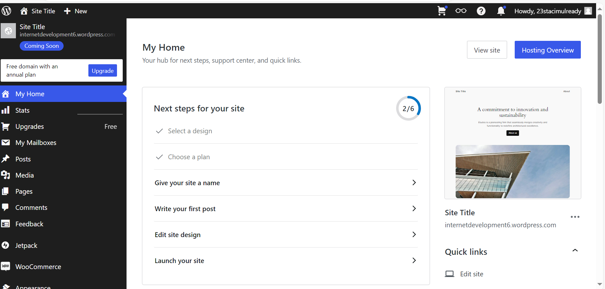
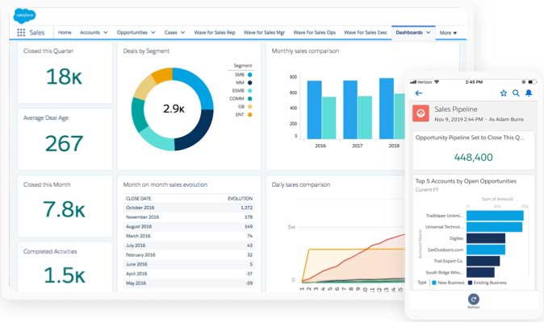
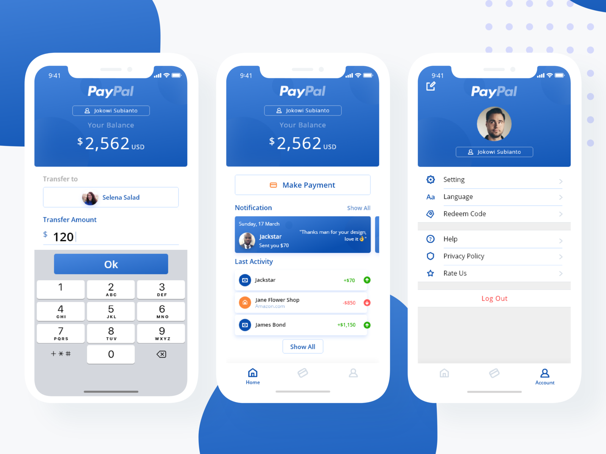

CMS Content Management Systems
What is it?
CMS is a practical way of designing a website. It only takes a few hours and your website is ready. A CMS can produce different types of designs for Website, Blog or even E-Commerce. Content Management Systems are created by programmers and coders so the hard work is already done for you. When downloading a CMS, you ill obtain a Zip folder of CMS Directory.
What is CMS Directory?
It explains the details of the CMS that you just downloaded and how it runs. It’s three main focuses are;- Module
A module runs the Browse, Log-in, Profile images, linking systems and Newsfeeds of a webpage that you open. - Themes
The themes are considered a sub-directory inside CMS directory. It contains the HTML5 and CSS with JavaScript or Ajax for graphical structure. In other words, Theme retrieves the Content Data and Coding Tags used aswel as Imagery or Video. - .htacess
Is a server that handles your website on the World Wide Web. It manages SEO (search engine optimization), redirectors and overwrites.
Types of CMS
Free and Popular - Control Managements Systems- Drupal
Drupal is recommended the best online mainly because it has a huge system cutting down on consumption of memory and hardware. - Joomla
Joomla is known as the easiest to use because it’s a case of Drag-and-Drop your content in. - Word Press
Word Press is quick and one of the most common.
It will run a check on the CMS a website is using and detect what information it has on it. For example, I checked WordPress and it brought up information such as statistics on market share, the different types of WordPress versions, Top Domain level of users worldwide and related technology. It also gives a brief description of Word Press CMS.
DAM
Now that you know a little more on Content Management Systems it’s time to look quickly at its partner DAM Digital Asset Management. The DAM manages the organising and access of the media like images, video and branding materials that you wish to have in your website.PROS and CONS
Pro's
- No coding is needed
- Easy to use and navigate
- The CMS software is fast so it reduces the time it would take to do it yourself
- The CMS software is versatile and allows you to create to your needs. Be it blog, e-commerce or other
- CMS software has a two-factor authentication available for users signing up to your website
- Content can be updated instantly
Con's
- Plug-ins are expensive
- Large projects would not be possible on a CMS
- The software needs regular updates, failure to do so can put it at risk
Content Management System Software
Word Press
WordPress is a host for an Open Source. It’s a software that allows you to create and publish a website and e-commerce. WordPress updates regularly keeping the software and your business safe and secure. WordPress covers everyone’s needs from creators, business owners and organizations to bloggers. WordPress gives you a custom domain that will be your unique address for your website, with a secure anti-spam software included.
CRM Customer Relationship Management
What is CRM?
Customer Relationship Management CRM track and manages relationships and interactions with customers. It’s a support for Sales and keeps measurement of a company’s growth. It also manages contact with existing customers and potential customers. A CRM system analyses existing customer’s sales and follows up with new offers that might interest them to come back, this helps with improving workflow. CRM solutions have multiple ways of interacting with customers from any industries. A CRM system adds more support than e-commerce. CRM systems also include analytics on Order, Revenue, Social Media and Opportunity Management.
Values and Benefits of CRM
Values- Business Strategy Enhancement
Identifying business objectives for development. Coming up with customer service protocols that will be of benefit. Being coherent on CRM features and processors. And addresses any functional needs. CRM priorities customer service, employee roles, identifying opportunities and achieving goals. - Cloud Agility and Adaptability
CRM solutions move to the cloud this can sometimes cause adverse issues. With CRM its cloud’s workflow automation and infrastructure greatly influences results with distinctive platform suites of analytics and machine learning.
- Higher Revenue: increasing generated money by improving sales/services productively.
- Lower Direct Costs: reduce product exposure to non-beneficial customers to enhance the quality of sales.
- Lower Indirect Costs: limproving trade contracts and using technology support to improve CRM applications to cover customization that will reduce user training.
SALESFORCE CRM
Salesforce CRM manages all company transactions. Salesforce aims to improve relationships, improve business growth, stay connected with customers streamline processes and improve profit. The CRM system tracks all customer interactions from sale calls, customer service contact and marketing emails. Salesforce gives large businesses easy customer tracking that’s sharable and for small businesses they work out a strategy to do more with less. With lots of data streams coming in the CRM can manage and organise it by creating unified customer profiles that contain purchase history, order status, customer service issues and more. This is a better way of keeping details from customers regarding enquiries that may be written down, saved on a laptop or kept in memory, CRM will control it all. CRM AI works from instructions that you give it. AI makes more accurate predictions on sales targets, e-commerce sales and sending out marketing emails. Salesforce CRM guarantee increases from 19% up to 34% across all services like Sales, Marketing, Digital Commerce and IT and Technology.
Watch this video for more of an understanding on how Salesforce works!
Payment Systems
The CRM System is connected to the Payment Processing Platform. This is called a Payment Integration it allows the business to receive its payments through the CRM Interface. Not only does this system simplify payment tracking but also gives the business insight of customer behaviour and sales performance. How this works is the CRM integration connects the CRM system with other software’s specifically designed for online payments. The software’s exchange data and processes it between the two. This is known as a Payment Processor or Gateway that accepts the payment within the CRM. Application Programming Interfaces (API) holds the connection between the CRM System and Payment Gateway keeping it secure. It is encrypted for protection. The synchronisation comes next managing the card information to the customers profile and automatically updating the status of the order aswel as receipts. The gateway is where the transaction is authorized confirming the payment has been received. Staff are trained to use Integrated Systems and the business needs to ensure the system can handle increased transaction volumes along with customer sales. Integration System do come at a cost for licensing fees, development and hardware upgrades.
Different Types of Integration Payments
- Payment Gateway
A Third Party service that controls online payments. Securing the transaction between business and customer. - Direct Integration
Is a website payment processor or application. It does not consist of a Third Party giving the business complete control of the payment transaction. - Hosted Payment Pages
The Payment Processor redirects the customer to a Hosted Payment page. - Plugins and Extensions
Are a Prebuilt Integration for E-commerce and CRM Systems.
Benefits of Payment Integration
- Generated reports of full transaction history
- Purchasing Patterns and behaviours to help with Marketing tactics
- Automatic Invoices to customers
- Transaction Alerts
- Security Standards are met with (PCI DSS) Payment Card Industry Data Security Standards
- Fraud Detection can be detected through the Integration System
PayPal
An online payment method that links in with the CRM System to successfully secure an online money transfer between customers and businesses. PayPal is available to download for customers on their mobile. The customer creates an account and connects it to their bank card, credit card or checking account. Once the app confirms the payment method the customer can send money or in other cases receive it. Merchants use a PayPal card reader in shops and an online payment option for businesses. To sign up all you need is an email address and bank account or credit card. If it’s for mobile, verification of the number will be prompt. PayPal then verifies the account to ensure it’s the right owner. For business owner’s receipt of payments can be instant or in some cases available within 21days. Typically for new businesses which don’t have a history with PayPal. PayPal’s business solutions include online and in person transactions, business management services, credit and financing options. The purpose of PayPal is to not make online transactions with credit card or bank account numbers known. They are kept private and protected from the PayPal application. PayPal has fee’s for Merchants only but not for customers trying to buy or for those making a money transfer. Fess occur for currency conversion a 4% charge is applied. For selling a fee of 2.29% or 3.49% is applied aswel as a fixed fee depending on transactions. Credit card and Debit cards charge a 2.99% fee. Cryptocurrencies has also a fee charge. PayPal and Stripe works together in the services and fees.
Supply Chain Management
Supply Chain Management monitors the production and distribution of company products and services. The manager of a SCM has the job of reducing costs and ensuring there are enough products and services available to supply. While the SCM system controls the production shipment and distribution.
There are 5 phases to the SCM here’s how they work.
- Planning
Matching supply to customer and predicting future needs. Raw materials, components, equipment capacity and limitations are all processed and demands are met. - Sourcing
Suppliers with materials need to manufacture goods. Vendors pricing are affordable and delivery from Vendors are met in accordance to times agreed. - Manufacturing
transforming raw materials into something new. This is done by assembly, testing, inspection and packaging. - Delivery
Sales are finalized and the company then uses their delivery channels to ensure safe and timely deliveries to customers. - Returns
Often known as reverse logistics is the process of refunds or product recall. Customer returns help the company gain feedback on poorly designed products and make changes improving product quality.